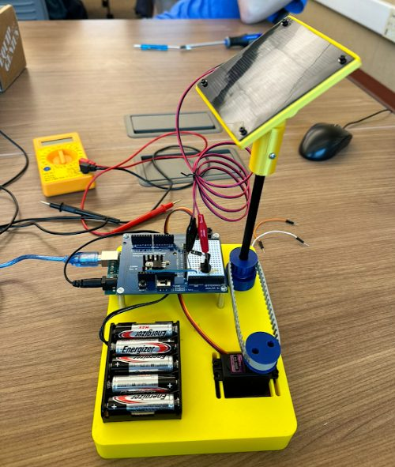
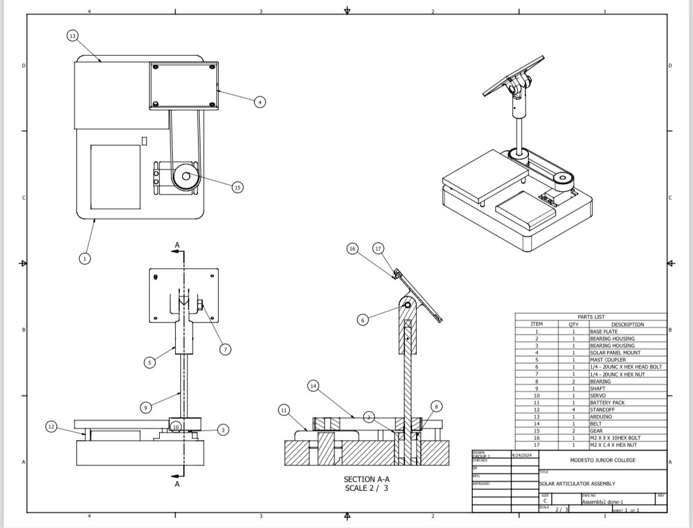

Lead designer · 2024 · Modesto Junior College
Autonomous Solar Tracker
RoleLead designer
Printed parts8 (PLA + TPU)
Hardware1/4-20 & M2 fasteners, bearings
ElectronicsArduino Uno, servo, solar cell
ResultEvery printed part fit on the first print
What it does
An Arduino Uno rotates the panel's mast a full 360° through a servo and timing belt, records the solar cell's output along the way, and returns to the angle that produced the most power. The panel's tilt is set by hand at a pivot and locked in place.
My rules
- Use specific off-the-shelf fasteners and bearings, with no glue anywhere.
- Use as few parts as possible.
- Everything comes fully apart and goes back together.
Design details
- Locking pivot. The panel tilts on a 1/4-20 bolt with a hex nut captured in the print, so it can't spin loose once tightened.
- Adjustable belt tension. The servo seat is slotted, so sliding the servo back pulls the timing belt tight against the mast.
- Glue-free pulley. A conical TPU press-fit bushing grips the pulley to the mast.
- Bearing housings. Two printed housings, Ø32 × 40 mm with a 22 mm bore, seat the ball bearings the mast spins in.
- Mounting holes for the Arduino, solar cell, servo and battery pack are designed into the prints.
One evening, eight parts
The first round of parts didn't fit the hardware we had chosen. Instead of patching them, I restarted from scratch one Friday evening and designed all eight printed parts in about eight hours. Because I built FDM tolerances into the CAD from the start, every part fit on the first print.


Loading 3D model…
Drag to rotate · scroll or pinch to zoom
Bill of materials
From the assembly drawing. Printed parts are my designs. Bought parts are off the shelf.
| Part | Qty | Source |
|---|---|---|
| Base plate | 1 | Printed |
| Bearing housing | 2 | Printed |
| Solar panel mount | 1 | Printed |
| Mast coupler | 1 | Printed |
| Timing pulley | 2 | Printed |
| Press-fit bushing (TPU) | 1 | Printed |
| 1/4-20 UNC hex bolt + nut | 1 | Bought |
| M2 × 8 bolt + M2 nut | 1 | Bought |
| Ball bearing | 2 | Bought |
| Shaft, belt, standoffs (4) | — | Bought |
| Servo, Arduino Uno, battery pack, solar cell | — | Bought |